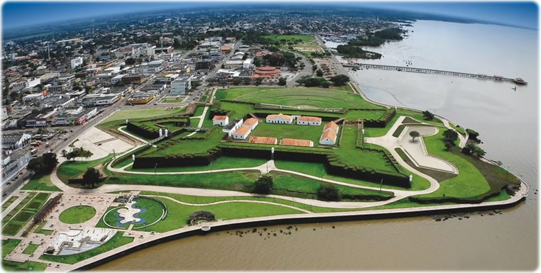
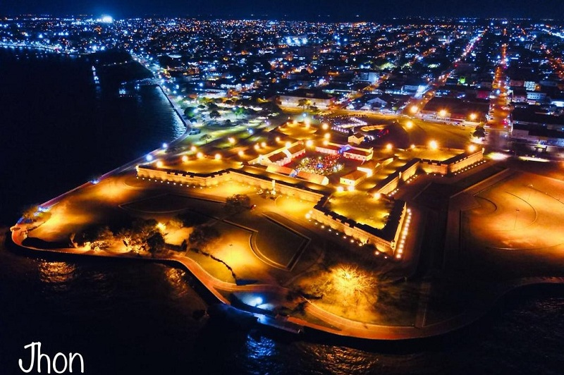
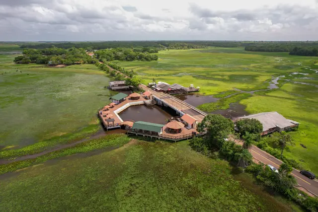

Sua próxima viagem:
Conheça o Amapá

Para os amantes da natureza, o estado oferece experiências únicas, como a observação da pororoca no Rio Araguari, onde as águas do mar avançam sobre o rio, formando ondas propícias para a prática do surfe.
Para os Amantes de Historia
Descubra 3 destinos imperdíveis no Amapá
Os três locais imperdíveis no Amapá, combinando história, cultura e natureza amazônica, são a Fortaleza de São José de Macapá, o Marco Zero do Equador com sua experiência de estar em dois hemisférios, e a APA do Curiaú, que oferece contato com comunidades quilombolas e a floresta, com passeios de canoa por igarapés, destacando a rica cultura e biodiversidade do estado.

1.Marco Zero
Equinócio, uma manifestação em que os raios do sol, no seu movimento aparente, incidem diretamente sobre a linha do Equador. Nesse período, os dias e as noites têm a mesma duração em todo o planeta.
Bom para:
- Conhecimento
- História

2.Fortaleza de são josé
A Fortaleza de São José de Macapá foi erguida entre 1764 e 1782 para defender o extremo norte do Brasil, consolidando o domínio português na Amazônia contra invasões estrangeiras, com projeto de engenharia militar (inspirado em Vauban) e mão de obra indígena e escravizada. Hoje, é um patrimônio histórico nacional (tombada pelo IPHAN em 1950) e um museu, com sua arquitetura em forma de estrela e complexo de defesa, sendo a maior fortaleza do Brasil e um importante ponto turístico e cultural do Amapá.
Bom para:
Casais familia amigos
- História
- Famílias
- Casais

3.APA do Curiaú
APA do Curiaú (Área de Proteção Ambiental do Rio Curiaú) é uma importante Unidade de Conservação no Amapá, perto de Macapá, que visa proteger sua rica biodiversidade de cerrado e florestas alagadas, além de preservar a cultura de comunidades tradicionais, especialmente os remanescentes de quilombos (Curiaú, Rosa, São José do Mata Fome) que mantêm vivas tradições como o marabaixo e o batuque. Criada em 1998, a APA equilibra a conservação ambiental com o uso sustentável dos recursos, sendo um local de lazer e de forte identidade cultural.
Bom para:
- Famílias
- Casais
- Diverção